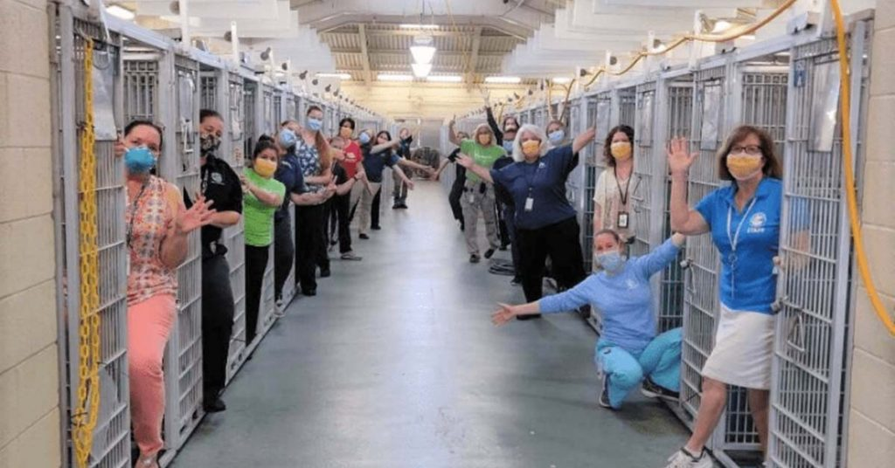

We are The Animal Rescue Services. We started rescuing animals in 2010. We are a volunteer organization that rescue's many different species of animals and then re-home them. This is our home page but we would love for you to join us! the link to our join us page is at the top of our page. We also have our re-home a dog and re-home a cat page where you can check out our cats and dogs. But, if you're looking for something different then check out our something different page up top. Thank you for visiting our website!
Palm Beach County Animal Care and Control Animal Shelter